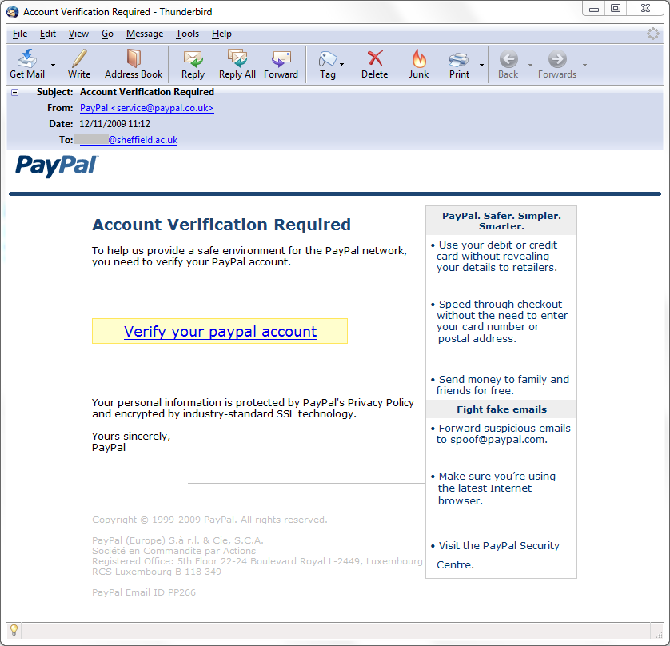
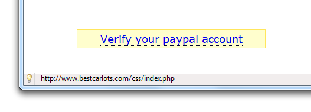

Most pieces of hardware and software do have some vulnerabilities. Hackers can take advantage of these vulnerabilities so that they can infilitrate a computer, or gather private information from a computer.
Hackers can also gather information with phishing scams. This normally happens when an email is sent to a user. While the email looks like it is secure and from the correct site, it is not. Phishing scams can send the user to a fake website, where they might be resetting their password, logging in, or some other action. The site can then gather the information the user typed in, and the hacker can take this information for their own purpose. For example, they might have taken bank account information. They would then use this to log in to the actual bank account.

Similar to phishing scams are trojans. While it may look like a legitimate piece of software or file, it is actually a file that will infect a computer. This collect data from the computer. It may also create more ways for a hacker to get into the computer. These may be known as backdoors.
Yet another example of malware is a worm. Worms can work by finding a vulnerability and exploiting it. It relies on these vulnerabilities to spread itself, normally within a computer network. Some worms rely un the user to unknowingly spread the worm. An excellent example of a worm is Conficker. It infected several million computers. This created a botnet.
For more information on viruses, read this article.